3-5-Inotify实时数据同步
数据备份的重要性
网站集群架构中，数据永远是最核心且重要的，数据丢失，将会给企业造成巨大损失
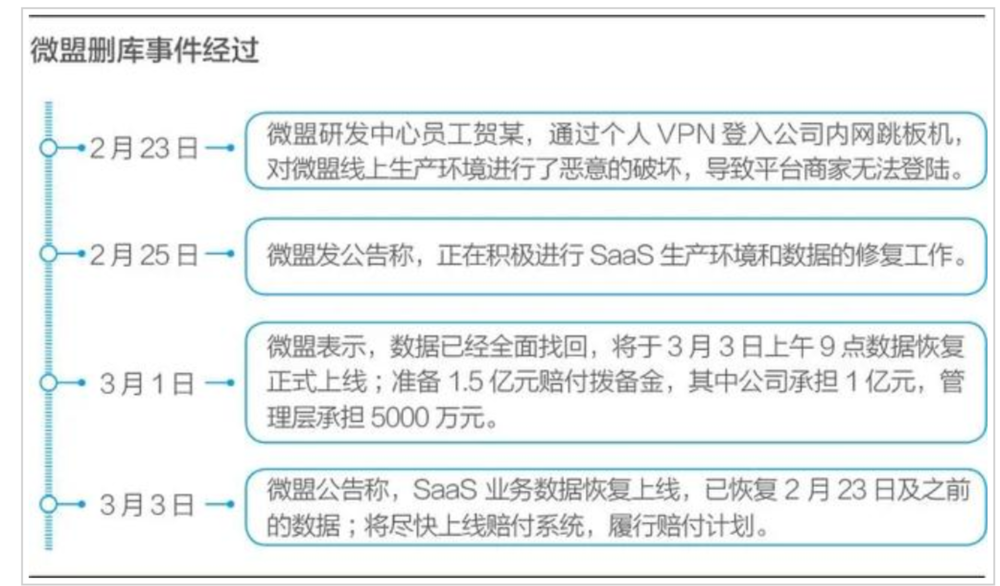
数据备份方案
企业网站和应用都得有完全的数据备份方案确保数据不丢失，通常企业有如下的数据备份方案
定时任务定期备份
需要周期性备份的数据可以分两类：
- 后台程序代码、运维配置文件修改，一般会定时任务执行脚本进行文件备份，然后配置Rsync工具推送到远程服务器备份
- 对于数据库文件用定时任务脚本配合数据库提供的备份工具，定时生成备份文件，配合Rsync备份到远端
为什么要用实时同步服务
因为定时任务有缺陷，一分钟以内的数据无法进行同步，容易造成数据丢失
实施复制方案
实施复制是最适合企业备份重要数据的方式，用于用户提交的数据备份，对于用户提交的普通文件（jpg、tar、zip、MP4、txt、html）等待，都可以用Inofity+Rsync实时备份方案。
对于数据文件，还有更复杂的分布式存储方案，把数据同时备份成多份，如FastDFS、GlusterFS等
对于提交到数据库中的数据，还可以用数据库的主从复制（如MySQL），这是软件自带的实时备份。
图解备份方式
rsync+crond定时备份
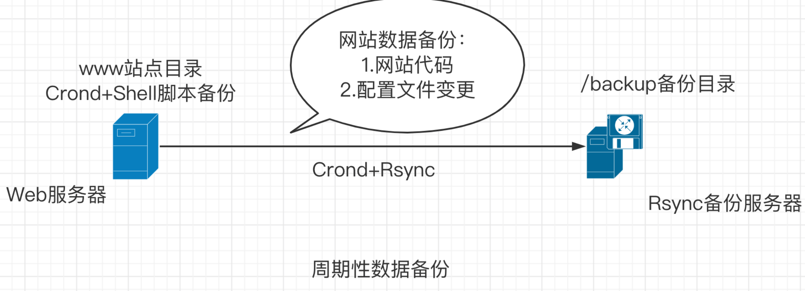
rsync+inotify实时同步
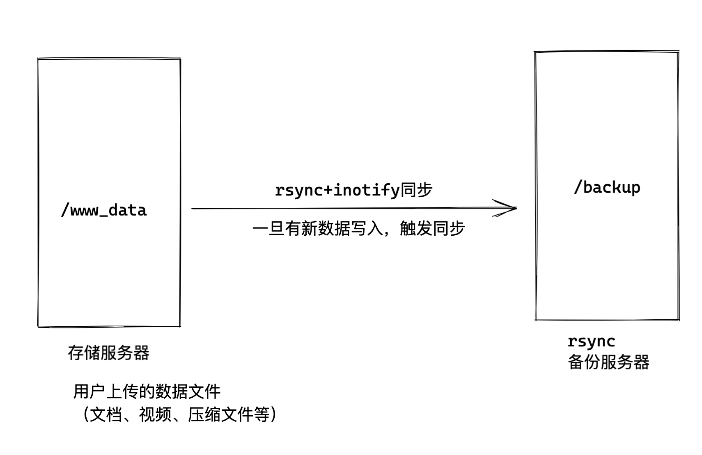
实时同步准备
1.准备俩机器
192.168.0.110 yuchao-back01 /bak_rsync/ 备份目录
192.168.0.123 yuchao-dev01 /devdata/python_data/ 数据目录
实时复制说明
1.实时复制软件会监控磁盘文件系统的变化，比如指定的/data目录，实时复制软件进程会实时监控这个/data目录中对应文件系统数据的变化。
2.一旦/data目录文件发生变化，就会执行rsync命令，将变化的数据推送到备份服务器对应的备份目录中
实施复制软件介绍
| 软件 | 依赖程序 | 部署难点 | 说明 |
|---|---|---|---|
| Inotify-tools | Rsync守护进程 | 写复制脚本 | 监控目录数据变化 |
Inotify是一种异步的系统事件监控机制，通过Inotify可以监控文件系统中添加、删除、修改等事件，利用这个内核接口，第三方软件可以监控文件系统下的情况变化。
那么Inofity-tools就是该类软件的实现，是一个监控指定目录数据实时变化的软件。
Inofity+Rsync实施复制实战
Inotify-tools本身的核心功能都是监控指定目录内的数据变化，具体的复制到远端服务器的功能还是借助Rsync工具配合，
Inotify机制软件工作流程如下
- 备份源客户端开机运行Inotify软件，检测指定目录的文件系统变化
- 一旦获取到指定监控目录的数据发生变化，即刻执行Rsync命令复制数据。
- 将变化的数据发送到Rsync服务端的备份目录。
部署拓扑图
部署拓扑图
以rsync守护进程模式部署，且以远程数据同步方式，由client向server推送数据。
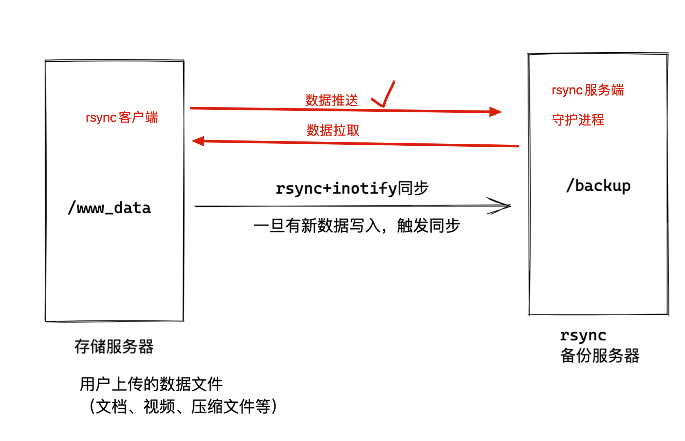
我们这里设计的形式是，数据推送
1.准备好rsync服务端，等待客户端发来同步数据。（备份服务器）
2.准备好rsync客户端，结合inotify实现文件更新，主动执行rsync命令推送（开发服务器）
Backup服务器（rsync服务端）
理解rsync部署流程
1.rsync程序安装
2.rsync配置文件修改
3.创建rsync服务特定用户
4.创建rsync数据备份的目录，对特定用户授权
5.创建rsync认证密码文件，修改密码文件权限600
6.启动rsync服务，以守护进程模式
7.设置rsync开机启动
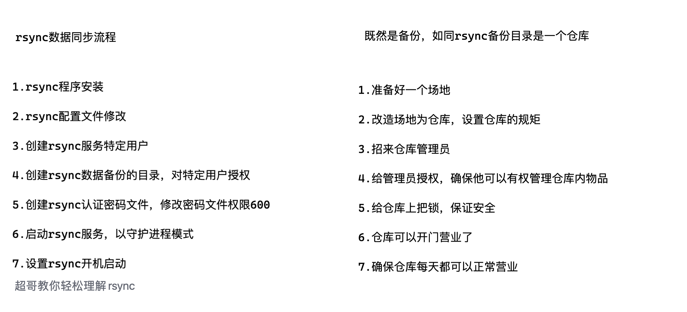
部署流程
1.安装rsync
[root@yuchao-backup01 ~]# yum install rsync -y
2.修改配置文件/etc/rsyncd.conf
写入如下配置，不得在配置文件里写注释
######by chaoge rsyncd.conf
uid = rsync
gid = rsync
fake super = yes
use chroot = no
max connections = 200
pid file = /var/run/rsyncd.pid
lock file = /var/run/rsync.lock
log file = /var/log/rsyncd.log
ignore errors
read only = false
list = false
hosts allow = 192.168.0/0/24
hosts deny = 0.0.0.0/32
auth users = rsync_backup
secrets file = /etc/rsync.password
[backup-dev]
comment = This is chaoge backup!
path = /backup/
3.根据配置文件里定义的信息，创建用户，文件等
[root@yuchao-backup01 ~]# useradd rsync -s /sbin/nologin -M
[root@yuchao-backup01 ~]# id rsync
uid=9665(rsync) gid=9666(rsync) 组=9666(rsync)
创建备份目录，授权
[root@yuchao-backup01 ~]# mkdir /backup
[root@yuchao-backup01 ~]# chown -R rsync.rsync /backup/
创建认证文件，授权
[root@yuchao-backup01 ~]# echo "rsync_backup:yuchao666" > /etc/rsync.password
[root@yuchao-backup01 ~]# chmod 600 /etc/rsync.password
4.启动rsync服务，开机自启
[root@yuchao-backup01 ~]#
[root@yuchao-backup01 ~]# systemctl start rsyncd
[root@yuchao-backup01 ~]# systemctl enable rsyncd
Created symlink from /etc/systemd/system/multi-user.target.wants/rsyncd.service to /usr/lib/systemd/system/rsyncd.service.
[root@yuchao-backup01 ~]#
[root@yuchao-backup01 ~]# ps -ef|grep rsync
root 27569 1 0 00:58 ? 00:00:00 /usr/bin/rsync --daemon --no-detach
root 27604 26157 0 00:58 pts/1 00:00:00 grep --color=auto rsync
5.检查rsync
[root@yuchao-backup01 ~]# netstat -tnlp|grep rsync
tcp 0 0 0.0.0.0:873 0.0.0.0:* LISTEN 27569/rsync
tcp6 0 0 :::873 :::* LISTEN 27569/rsync
dev服务器部署（rsync客户端）
1.确认rsync命令存在
2.创建rsync连接所需的密码文件，授权
1.安装rsync
[root@yuchao-dev01 ~]# yum install rsync -y
2.创建密码文件，只写密码即可
[root@yuchao-dev01 ~]# echo 'yuchao666' > /etc/rsync.password
3.必须要给密码文件授权，去掉other的权限，否则rsync会报错
[root@yuchao-dev01 ~]# chmod 600 /etc/rsync.password
测试rsync数据同步是否正确。
client > server 、数据推送
[root@yuchao-dev01 ~]#
[root@yuchao-dev01 ~]# rsync -avzP Xftp-7.0.0063p.exe rsync_backup@192.168.0.110::backup-dev --password-file=/etc/rsync.password
-avzP
-a 保持文件原有属性
-v 显示传输细节情况
-z 对传输数据压缩传输
-P 显示文件传输的进度信息
也可以直接使用密码变量，进行同步
tail -1 /etc/bashrc
export RSYNC_PASSWORD=chaoge
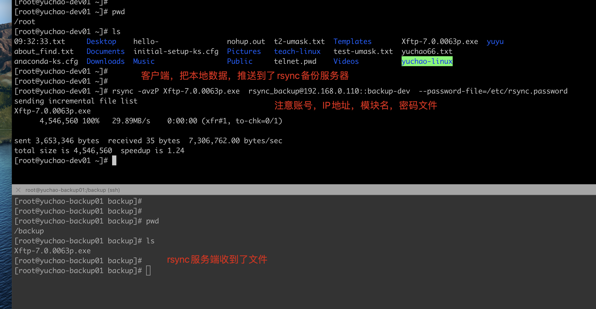
Client < Server ，数据拉取
rsync客户端，不仅可以向rsync服务端的备份目录里，写入数据
还可以从该备份目录中，提取数据。
[root@yuchao-dev01 tmp]# rsync -avzP rsync_backup@192.168.0.110::backup-dev/ /tmp --password-file=/etc/rsync.password
receiving incremental file list
./
music.txt
10 100% 9.77kB/s 0:00:00 (xfr#1, to-chk=4/6)
a/
a/b/
a/b/c/
a/b/c/d/
sent 66 bytes received 238 bytes 202.67 bytes/sec
total size is 10 speedup is 0.03
[root@yuchao-dev01 tmp]# tree
.
├── a
│ └── b
│ └── c
│ └── d
└── music.txt
4 directories, 1 file
[root@yuchao-dev01 tmp]#
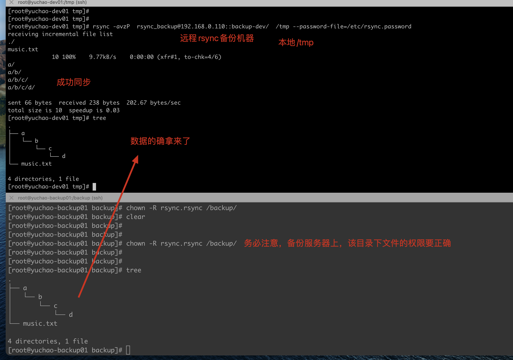
准备部署inotify-tools
在上述，确保了，两台机器可以正确进行rsync数据同步后。
我们可以开始部署inotify了
只有Linux内核版本在2.6.13起才支持，以及是否存在三个系统文件，存在则支持
1.检查系统内核版本
[root@yuchao-dev01 tmp]# uname -r
3.10.0-862.el7.x86_64
2.检查inotify相关文件
[root@yuchao-dev01 tmp]# ls -l /proc/sys/fs/inotify/
总用量 0
-rw-r--r-- 1 root root 0 2月 16 11:46 max_queued_events
-rw-r--r-- 1 root root 0 2月 16 11:46 max_user_instances
-rw-r--r-- 1 root root 0 2月 15 10:19 max_user_watches
max_user_watches: 设置inotifywait或inotifywatch命令可以监视的文件数量（单进程）
默认只能监控8192个文件
max_user_instances: 设置每个用户可以运行的inotifywait或inotifywatch命令的进程数
默认每个用户可以开启inotify服务128个进程
max_queued_events: 设置inotify实例事件（event）队列可容纳的事件数量
默认监控事件队列长度为16384
3.安装inotifty-tools工具（需要配置epel源）
[root@yuchao-dev01 tmp]# yum install inotify-tools -y
检查生成的软件命令
[root@yuchao-dev01 tmp]# rpm -ql inotify-tools |head -2
/usr/bin/inotifywait
/usr/bin/inotifywatch
Inotify命令工具
上述操作我们安装好了Inotify-tools软件，生成2个重要的命令
- inotifywait：在被监控的目录等待特定文件系统事件（open、close、delete等事件），执行后处于阻塞状态，适合在Shell脚本中使用，是实现监控的关键
- Inotifywatch：收集被监控的文件系统使用的统计数据（文件系统事件发生的次数统计）
【inotifywait命令解释】
inotifywait用于等待文件或文件集上的一个待定事件，可以监控任何文件和目录设置，并且可以递归地监控整个目录树；
inotifywatch用于收集被监控的文件系统计数据，包括每个inotify事件发生多少次等信息
从上面可知inotifywait是一个监控事件，可以配合shell脚本使用它。与它相关的参数：
语法格式：inotifywait [-hcmrq][-e][-t][–format][-timefmt][…]
-m： 即“–monitor” 表示始终保持事件监听状态。
-d：类似于-m参数，将命令运行在后台，记录出发的事件信息，记录在指定文件里，加上--outfile参数
-r： 即“–recursive” 表示递归查询目录
-q： 即“–quiet” 表示打印出监控事件
-o： 即“–outfile” 输出事情到一个文件而不是标准输出
-s: 即“–syslog” 输入错误信息到系统日志
-e： 即“–event”， 通过此参数可以指定要监控的事件，常见的事件有modify、delete、create、close_write、move、close、unmount和attrib等
-format： 指定输出格式；常用的格式符如：
%w：表示发生事件的目录
%f：表示发生事件的文件
%e：表示发生的事件
%Xe:事件以“X”分隔
%T：使用由-timefmt定义的时间格式
-timefmt：指定时间格式，用于-format选项中的%T格式
利用Inotify软件监控的事件主要是如下，也是我们使用命令，需要指定的那些事件，指的就是你想监控文件内容变化了，还是被删了，还是正在被编辑，被修改，等情况。
Events 含义
access 文件或目录被读取
modify 文件或目录内容被修改
attrib 文件或目录属性被改变
close 文件或目录封闭，无论读/写模式
open 文件或目录被打开
moved_to 文件或目录被移动至另外一个目录
move 文件或目录被移动到另一个目录或从另一个目录移动至当前目录
create 文件或目录被创建在当前目录
delete 文件或目录被删除
umount 文件系统被卸载
关于监控事件的细节解释
可监控的事件
有几种事件能够被监控。一些事件，比如 IN_DELETE_SELF 只适用于正在被监控的项目，而另一些，比如 IN_ATTRIB 或者 IN_OPEN 则只适用于监控过的项目，或者如果该项目是目录，则可以应用到其所包含的目录或文件。
IN_ACCESS
被监控项目或者被监控目录中的条目被访问过。例如，一个打开的文件被读取。
IN_MODIFY
被监控项目或者被监控目录中的条目被修改过。例如，一个打开的文件被修改。
IN_ATTRIB
被监控项目或者被监控目录中条目的元数据被修改过。例如，时间戳或者许可被修改。
IN_CLOSE_WRITE
一个打开的，等待写入的文件或目录被关闭。
IN_CLOSE_NOWRITE
一个以只读方式打开的文件或目录被关闭。
IN_CLOSE
一个掩码，可以很便捷地对前面提到的两个关闭事件（IN_CLOSE_WRITE | IN_CLOSE_NOWRITE）进行逻辑操作。
IN_OPEN
文件或目录被打开。
IN_MOVED_FROM
被监控项目或者被监控目录中的条目被移出监控区域。该事件还包含一个 cookie 来实现 IN_MOVED_FROM 与 IN_MOVED_TO 的关联。
IN_MOVED_TO
文件或目录被移入监控区域。该事件包含一个针对 IN_MOVED_FROM 的 cookie。如果文件或目录只是被重命名，将能看到这两个事件，如果它只是被移入或移出非监控区域，将只能看到一个事件。如果移动或重命名一个被监控项目，监控将继续进行。参见下面的 IN_MOVE-SELF。
IN_MOVE
可以很便捷地对前面提到的两个移动事件（IN_MOVED_FROM | IN_MOVED_TO）进行逻辑操作的掩码。
IN_CREATE
在被监控目录中创建了子目录或文件。
IN_DELETE
被监控目录中有子目录或文件被删除。
IN_DELETE_SELF
被监控项目本身被删除。监控终止，并且将收到一个 IN_IGNORED 事件。
IN_MOVE_SELF
监控项目本身被移动。
测试create事件
当我们的代码目录，有了更新，希望立即实现数据同步，即可检测create事件。
1.查看inotifywait语法，监控文件夹
[root@yuchao-dev01 data]# inotifywait -mrq --timefmt "%F" --format "%T %w%f 捕获到的事件是：%e" /data
# 参数解释
-m： 即“–monitor” 表示始终保持事件监听状态。
-r： 即“–recursive” 表示递归查询目录
-q： 即“–quiet” 表示打印出监控事件
--timefmt：指定时间格式
%m 月份(以01-12来表示)。
%d 日期(以01-31来表示)。
%y 年份(以00-99来表示)。
%w：表示发生事件的目录
%f：表示发生事件的文件
%T：使用由-timefmt定义的时间格式
%e：表示发生的事件
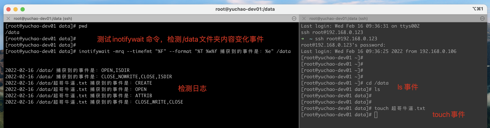
指定事件，上面是默认检测所有的事件
我们只想检测create事件，不要其他，可以这样。
[root@yuchao-dev01 data]#
[root@yuchao-dev01 data]# inotifywait -mrq --timefmt "%F" --format "%T %w%f 事件信息：%e" -e create /data
-e： 即“–event”， 通过此参数可以指定要监控的事件，常见的事件有modify、delete、create、close_write、move、close、unmount和attrib等
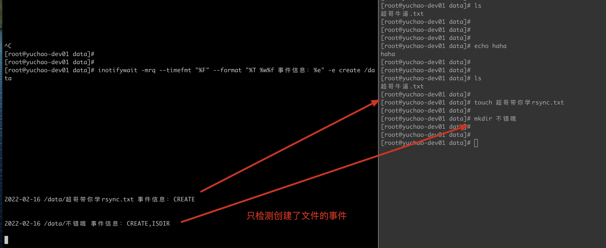
命令中只监控了create的事件，并没有检测其他事件，因此也只有create会被inotify监控到 -e： 即“–event”， 通过此参数可以指定要监控的事件，常见的事件有modify、delete、create、close_write、move、close、unmount和attrib等
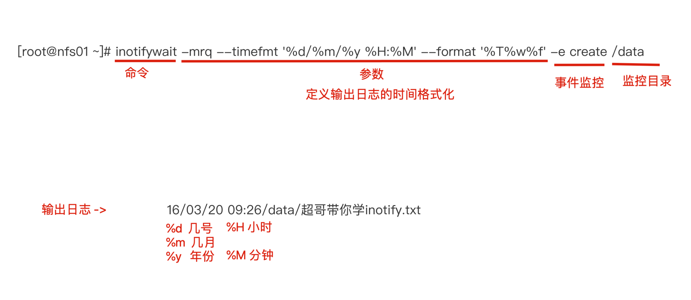
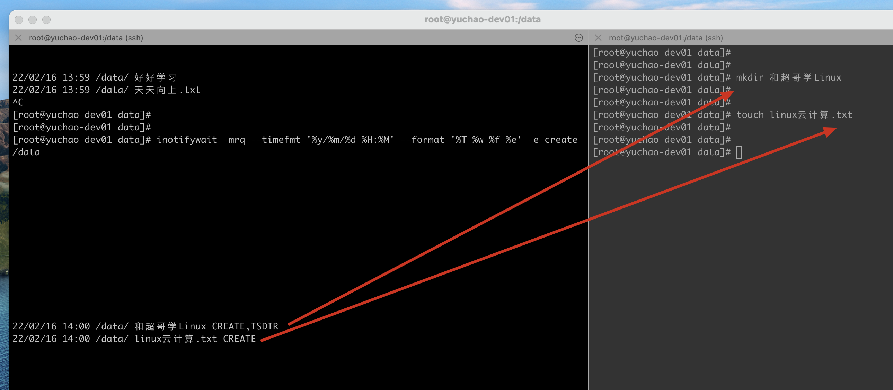
测试delete事件
[root@yuchao-dev01 data]# inotifywait -mrq --format '%w %f %e' -e delete /data
/data/ 超哥带你学rsync.txt DELETE
/data/ 好好学习 DELETE,ISDIR
/data/ 超哥牛逼.txt DELETE
/data/ 和超哥学Linux DELETE,ISDIR
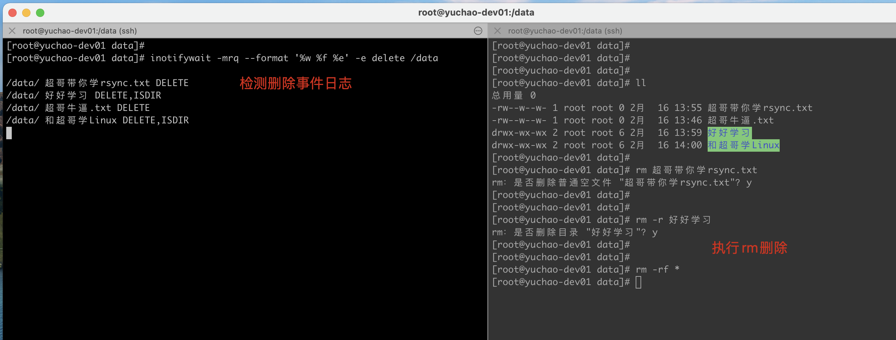
测试move事件
只要你在这个目录下，执行了move相关的指令，就会出发move事件
[root@yuchao-dev01 data]# inotifywait -mrq --format '%w %f %e' -e move /data
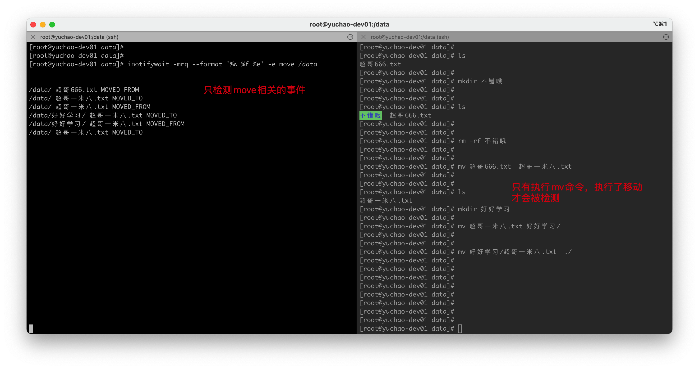
可以知道，inotiify的作用是，基于不同的事件，检测文件夹中，文件的变化。
当检测到有事件发生后，证明文件变化，我们可以执行数据同步rsync操作了。
实现inotify+rsync实时数据备份
可知，这个工具的用法就是
1.inotify检测文件变化
2.执行rsync同步
那么想自动化实现的话，手工是不行了，就的结合脚本实现。
数据实时监测备份
1.脚本如下，这里需要跟着超哥学完shell编程之后，方可理解。 先看下shell脚本，如何检测到文件内容的变化
1.生成一个普通文本
[root@yuchao-dev01 data]# seq 10 > yuchao.txt
[root@yuchao-dev01 data]#
[root@yuchao-dev01 data]# cat yuchao.txt
1
2
3
4
5
6
7
8
9
10
2.来看一个简单的循环shell脚本
[root@yuchao-dev01 data]# vim about_while.sh
[root@yuchao-dev01 data]#
[root@yuchao-dev01 data]# cat about_while.sh
cat yuchao.txt |while read line
do
echo 当前行内容是：$line
done
3.执行脚本
[root@yuchao-dev01 data]# pwd
/data
[root@yuchao-dev01 data]# ls
about_while.sh yuchao.txt
[root@yuchao-dev01 data]# sh about_while.sh
当前行内容是：1
当前行内容是：2
当前行内容是：3
当前行内容是：4
当前行内容是：5
当前行内容是：6
当前行内容是：7
当前行内容是：8
当前行内容是：9
当前行内容是：10
这个作用是让shell的while循环，不断的读取，文件内容
因此也可以用来读取inotifywait检测的日志信息，一旦有新日志出现，我们就执行rsync同步，实现（文件内容检测+rsync同步）
改造脚本，脚本需求是
1.开发机器上的代码目录，一旦有代码更新，执行rsync，将代码文件发给备份服务器
1.准备一个用于测试的代码目录
[root@yuchao-dev01 data]# mkdir -p /python_code/app1
[root@yuchao-dev01 data]# mkdir -p /python_code/app2
2.改造脚本，监测该目录
[root@yuchao-dev01 data]# cat about_inotify.sh
#!/bin/bash
/usr/bin/inotifywait -mrq -e modify,delete,create,attrib,move /python_code | while read line
do
rsync -a --delete /python_code/ rsync_backup@192.168.0.110::backup-dev
echo "`date +%F\ %T`出现事件$line" >> /var/log/rsync.log 2>&1
done
# 参数解释
-m 保持监控状态
-r 递归监控
-q 只打印事件
-e 指定事件
事件：
move 移动
delete 删除
create 创建
modify 修改
attrib 属性信息
4.添加脚本执行权限
[root@yuchao-dev01 data]# chmod +x about_inotify.sh
5.脚本执行，可以放入后台运行
一定注意，我们目前是rsync客户端，要连接服务端，如何认证？设置密码变量
[root@yuchao-dev01 data]# export RSYNC_PASSWORD=yuchao666
[root@yuchao-dev01 data]#
[root@yuchao-dev01 data]# ./about_inotify.sh
测试脚本结果
1.在开发服务器上，写入新代码文件
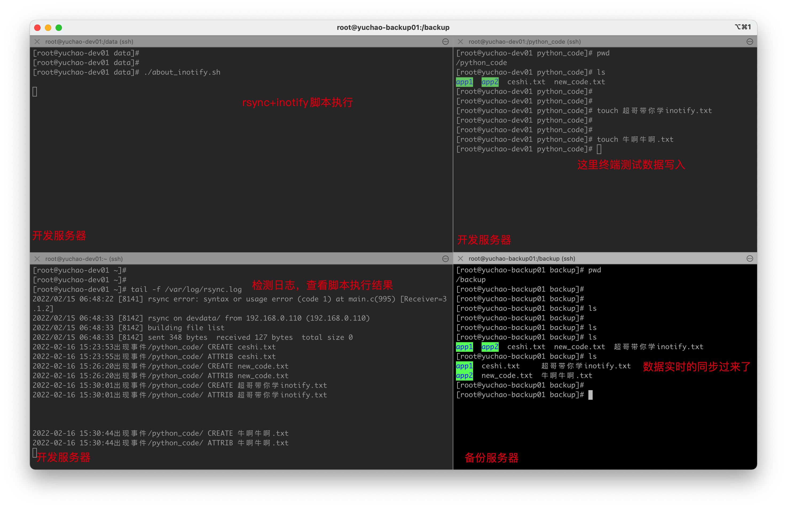
课后作业
1.完成rsync服务端、客户端部署、完成数据推送、拉取
2.完成inotify+rsync同步实战。